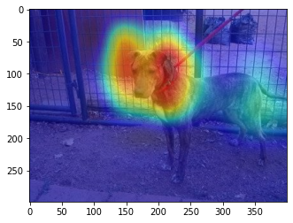

Training Image classifier with Chitra
Training Image classification model for Cats vs Dogs Kaggle dataset.
To install chitra
pip install --upgrade "chitra[nn]"
import functions and classes
Dataset Class
Dataset class has API for loading tf.data, image augmentation and progressive resizing.
Trainer
The Trainer class inherits from tf.keras.Model, it contains everything that is required for training. It exposes trainer.cyclic_fit method which trains the model using Cyclic Learning rate discovered by Leslie Smith.
import tensorflow as tf
from chitra.datagenerator import Dataset
from chitra.trainer import Trainer, create_cnn
from PIL import Image
BS = 16
IMG_SIZE_LST = [(128,128), (160, 160), (224,224)]
AUTOTUNE = tf.data.experimental.AUTOTUNE
def tensor_to_image(tensor):
return Image.fromarray(tensor.numpy().astype('uint8'))
Copy your kaggle key to /root/.kaggle/kaggle.json for downloading the dataset.
!kaggle datasets download -d chetankv/dogs-cats-images
!unzip -q dogs-cats-images.zip
ds = Dataset('dog vs cat/dataset/training_set', image_size=IMG_SIZE_LST)
image, label = ds[0]
print(label)
tensor_to_image(image).resize((224,224))
dogs
Create Trainer
Train imagenet pretrained MobileNetV2 model with cyclic learning rate and SGD optimizer.
trainer = Trainer(ds, create_cnn('mobilenetv2', num_classes=2))
WARNING:tensorflow:`input_shape` is undefined or non-square, or `rows` is not in [96, 128, 160, 192, 224]. Weights for input shape (224, 224) will be loaded as the default.
trainer.summary()
Model Summary
Model: "functional_1" __________________________________________________________________________________________________ Layer (type) Output Shape Param # Connected to ================================================================================================== input_1 (InputLayer) [(None, None, None, 0 __________________________________________________________________________________________________ Conv1_pad (ZeroPadding2D) (None, None, None, 3 0 input_1[0][0] __________________________________________________________________________________________________ Conv1 (Conv2D) (None, None, None, 3 864 Conv1_pad[0][0] __________________________________________________________________________________________________ bn_Conv1 (BatchNormalization) (None, None, None, 3 128 Conv1[0][0] __________________________________________________________________________________________________ Conv1_relu (ReLU) (None, None, None, 3 0 bn_Conv1[0][0] __________________________________________________________________________________________________ expanded_conv_depthwise (Depthw (None, None, None, 3 288 Conv1_relu[0][0] __________________________________________________________________________________________________ expanded_conv_depthwise_BN (Bat (None, None, None, 3 128 expanded_conv_depthwise[0][0] __________________________________________________________________________________________________ expanded_conv_depthwise_relu (R (None, None, None, 3 0 expanded_conv_depthwise_BN[0][0] __________________________________________________________________________________________________ expanded_conv_project (Conv2D) (None, None, None, 1 512 expanded_conv_depthwise_relu[0][0 __________________________________________________________________________________________________ expanded_conv_project_BN (Batch (None, None, None, 1 64 expanded_conv_project[0][0] __________________________________________________________________________________________________ block_1_expand (Conv2D) (None, None, None, 9 1536 expanded_conv_project_BN[0][0] __________________________________________________________________________________________________ block_1_expand_BN (BatchNormali (None, None, None, 9 384 block_1_expand[0][0] __________________________________________________________________________________________________ block_1_expand_relu (ReLU) (None, None, None, 9 0 block_1_expand_BN[0][0] __________________________________________________________________________________________________ block_1_pad (ZeroPadding2D) (None, None, None, 9 0 block_1_expand_relu[0][0] __________________________________________________________________________________________________ block_1_depthwise (DepthwiseCon (None, None, None, 9 864 block_1_pad[0][0] __________________________________________________________________________________________________ block_1_depthwise_BN (BatchNorm (None, None, None, 9 384 block_1_depthwise[0][0] __________________________________________________________________________________________________ block_1_depthwise_relu (ReLU) (None, None, None, 9 0 block_1_depthwise_BN[0][0] __________________________________________________________________________________________________ block_1_project (Conv2D) (None, None, None, 2 2304 block_1_depthwise_relu[0][0] __________________________________________________________________________________________________ block_1_project_BN (BatchNormal (None, None, None, 2 96 block_1_project[0][0] __________________________________________________________________________________________________ block_2_expand (Conv2D) (None, None, None, 1 3456 block_1_project_BN[0][0] __________________________________________________________________________________________________ block_2_expand_BN (BatchNormali (None, None, None, 1 576 block_2_expand[0][0] __________________________________________________________________________________________________ block_2_expand_relu (ReLU) (None, None, None, 1 0 block_2_expand_BN[0][0] __________________________________________________________________________________________________ block_2_depthwise (DepthwiseCon (None, None, None, 1 1296 block_2_expand_relu[0][0] __________________________________________________________________________________________________ block_2_depthwise_BN (BatchNorm (None, None, None, 1 576 block_2_depthwise[0][0] __________________________________________________________________________________________________ block_2_depthwise_relu (ReLU) (None, None, None, 1 0 block_2_depthwise_BN[0][0] __________________________________________________________________________________________________ block_2_project (Conv2D) (None, None, None, 2 3456 block_2_depthwise_relu[0][0] __________________________________________________________________________________________________ block_2_project_BN (BatchNormal (None, None, None, 2 96 block_2_project[0][0] __________________________________________________________________________________________________ block_2_add (Add) (None, None, None, 2 0 block_1_project_BN[0][0] block_2_project_BN[0][0] __________________________________________________________________________________________________ block_3_expand (Conv2D) (None, None, None, 1 3456 block_2_add[0][0] __________________________________________________________________________________________________ block_3_expand_BN (BatchNormali (None, None, None, 1 576 block_3_expand[0][0] __________________________________________________________________________________________________ block_3_expand_relu (ReLU) (None, None, None, 1 0 block_3_expand_BN[0][0] __________________________________________________________________________________________________ block_3_pad (ZeroPadding2D) (None, None, None, 1 0 block_3_expand_relu[0][0] __________________________________________________________________________________________________ block_3_depthwise (DepthwiseCon (None, None, None, 1 1296 block_3_pad[0][0] __________________________________________________________________________________________________ block_3_depthwise_BN (BatchNorm (None, None, None, 1 576 block_3_depthwise[0][0] __________________________________________________________________________________________________ block_3_depthwise_relu (ReLU) (None, None, None, 1 0 block_3_depthwise_BN[0][0] __________________________________________________________________________________________________ block_3_project (Conv2D) (None, None, None, 3 4608 block_3_depthwise_relu[0][0] __________________________________________________________________________________________________ block_3_project_BN (BatchNormal (None, None, None, 3 128 block_3_project[0][0] __________________________________________________________________________________________________ block_4_expand (Conv2D) (None, None, None, 1 6144 block_3_project_BN[0][0] __________________________________________________________________________________________________ block_4_expand_BN (BatchNormali (None, None, None, 1 768 block_4_expand[0][0] __________________________________________________________________________________________________ block_4_expand_relu (ReLU) (None, None, None, 1 0 block_4_expand_BN[0][0] __________________________________________________________________________________________________ block_4_depthwise (DepthwiseCon (None, None, None, 1 1728 block_4_expand_relu[0][0] __________________________________________________________________________________________________ block_4_depthwise_BN (BatchNorm (None, None, None, 1 768 block_4_depthwise[0][0] __________________________________________________________________________________________________ block_4_depthwise_relu (ReLU) (None, None, None, 1 0 block_4_depthwise_BN[0][0] __________________________________________________________________________________________________ block_4_project (Conv2D) (None, None, None, 3 6144 block_4_depthwise_relu[0][0] __________________________________________________________________________________________________ block_4_project_BN (BatchNormal (None, None, None, 3 128 block_4_project[0][0] __________________________________________________________________________________________________ block_4_add (Add) (None, None, None, 3 0 block_3_project_BN[0][0] block_4_project_BN[0][0] __________________________________________________________________________________________________ block_5_expand (Conv2D) (None, None, None, 1 6144 block_4_add[0][0] __________________________________________________________________________________________________ block_5_expand_BN (BatchNormali (None, None, None, 1 768 block_5_expand[0][0] __________________________________________________________________________________________________ block_5_expand_relu (ReLU) (None, None, None, 1 0 block_5_expand_BN[0][0] __________________________________________________________________________________________________ block_5_depthwise (DepthwiseCon (None, None, None, 1 1728 block_5_expand_relu[0][0] __________________________________________________________________________________________________ block_5_depthwise_BN (BatchNorm (None, None, None, 1 768 block_5_depthwise[0][0] __________________________________________________________________________________________________ block_5_depthwise_relu (ReLU) (None, None, None, 1 0 block_5_depthwise_BN[0][0] __________________________________________________________________________________________________ block_5_project (Conv2D) (None, None, None, 3 6144 block_5_depthwise_relu[0][0] __________________________________________________________________________________________________ block_5_project_BN (BatchNormal (None, None, None, 3 128 block_5_project[0][0] __________________________________________________________________________________________________ block_5_add (Add) (None, None, None, 3 0 block_4_add[0][0] block_5_project_BN[0][0] __________________________________________________________________________________________________ block_6_expand (Conv2D) (None, None, None, 1 6144 block_5_add[0][0] __________________________________________________________________________________________________ block_6_expand_BN (BatchNormali (None, None, None, 1 768 block_6_expand[0][0] __________________________________________________________________________________________________ block_6_expand_relu (ReLU) (None, None, None, 1 0 block_6_expand_BN[0][0] __________________________________________________________________________________________________ block_6_pad (ZeroPadding2D) (None, None, None, 1 0 block_6_expand_relu[0][0] __________________________________________________________________________________________________ block_6_depthwise (DepthwiseCon (None, None, None, 1 1728 block_6_pad[0][0] __________________________________________________________________________________________________ block_6_depthwise_BN (BatchNorm (None, None, None, 1 768 block_6_depthwise[0][0] __________________________________________________________________________________________________ block_6_depthwise_relu (ReLU) (None, None, None, 1 0 block_6_depthwise_BN[0][0] __________________________________________________________________________________________________ block_6_project (Conv2D) (None, None, None, 6 12288 block_6_depthwise_relu[0][0] __________________________________________________________________________________________________ block_6_project_BN (BatchNormal (None, None, None, 6 256 block_6_project[0][0] __________________________________________________________________________________________________ block_7_expand (Conv2D) (None, None, None, 3 24576 block_6_project_BN[0][0] __________________________________________________________________________________________________ block_7_expand_BN (BatchNormali (None, None, None, 3 1536 block_7_expand[0][0] __________________________________________________________________________________________________ block_7_expand_relu (ReLU) (None, None, None, 3 0 block_7_expand_BN[0][0] __________________________________________________________________________________________________ block_7_depthwise (DepthwiseCon (None, None, None, 3 3456 block_7_expand_relu[0][0] __________________________________________________________________________________________________ block_7_depthwise_BN (BatchNorm (None, None, None, 3 1536 block_7_depthwise[0][0] __________________________________________________________________________________________________ block_7_depthwise_relu (ReLU) (None, None, None, 3 0 block_7_depthwise_BN[0][0] __________________________________________________________________________________________________ block_7_project (Conv2D) (None, None, None, 6 24576 block_7_depthwise_relu[0][0] __________________________________________________________________________________________________ block_7_project_BN (BatchNormal (None, None, None, 6 256 block_7_project[0][0] __________________________________________________________________________________________________ block_7_add (Add) (None, None, None, 6 0 block_6_project_BN[0][0] block_7_project_BN[0][0] __________________________________________________________________________________________________ block_8_expand (Conv2D) (None, None, None, 3 24576 block_7_add[0][0] __________________________________________________________________________________________________ block_8_expand_BN (BatchNormali (None, None, None, 3 1536 block_8_expand[0][0] __________________________________________________________________________________________________ block_8_expand_relu (ReLU) (None, None, None, 3 0 block_8_expand_BN[0][0] __________________________________________________________________________________________________ block_8_depthwise (DepthwiseCon (None, None, None, 3 3456 block_8_expand_relu[0][0] __________________________________________________________________________________________________ block_8_depthwise_BN (BatchNorm (None, None, None, 3 1536 block_8_depthwise[0][0] __________________________________________________________________________________________________ block_8_depthwise_relu (ReLU) (None, None, None, 3 0 block_8_depthwise_BN[0][0] __________________________________________________________________________________________________ block_8_project (Conv2D) (None, None, None, 6 24576 block_8_depthwise_relu[0][0] __________________________________________________________________________________________________ block_8_project_BN (BatchNormal (None, None, None, 6 256 block_8_project[0][0] __________________________________________________________________________________________________ block_8_add (Add) (None, None, None, 6 0 block_7_add[0][0] block_8_project_BN[0][0] __________________________________________________________________________________________________ block_9_expand (Conv2D) (None, None, None, 3 24576 block_8_add[0][0] __________________________________________________________________________________________________ block_9_expand_BN (BatchNormali (None, None, None, 3 1536 block_9_expand[0][0] __________________________________________________________________________________________________ block_9_expand_relu (ReLU) (None, None, None, 3 0 block_9_expand_BN[0][0] __________________________________________________________________________________________________ block_9_depthwise (DepthwiseCon (None, None, None, 3 3456 block_9_expand_relu[0][0] __________________________________________________________________________________________________ block_9_depthwise_BN (BatchNorm (None, None, None, 3 1536 block_9_depthwise[0][0] __________________________________________________________________________________________________ block_9_depthwise_relu (ReLU) (None, None, None, 3 0 block_9_depthwise_BN[0][0] __________________________________________________________________________________________________ block_9_project (Conv2D) (None, None, None, 6 24576 block_9_depthwise_relu[0][0] __________________________________________________________________________________________________ block_9_project_BN (BatchNormal (None, None, None, 6 256 block_9_project[0][0] __________________________________________________________________________________________________ block_9_add (Add) (None, None, None, 6 0 block_8_add[0][0] block_9_project_BN[0][0] __________________________________________________________________________________________________ block_10_expand (Conv2D) (None, None, None, 3 24576 block_9_add[0][0] __________________________________________________________________________________________________ block_10_expand_BN (BatchNormal (None, None, None, 3 1536 block_10_expand[0][0] __________________________________________________________________________________________________ block_10_expand_relu (ReLU) (None, None, None, 3 0 block_10_expand_BN[0][0] __________________________________________________________________________________________________ block_10_depthwise (DepthwiseCo (None, None, None, 3 3456 block_10_expand_relu[0][0] __________________________________________________________________________________________________ block_10_depthwise_BN (BatchNor (None, None, None, 3 1536 block_10_depthwise[0][0] __________________________________________________________________________________________________ block_10_depthwise_relu (ReLU) (None, None, None, 3 0 block_10_depthwise_BN[0][0] __________________________________________________________________________________________________ block_10_project (Conv2D) (None, None, None, 9 36864 block_10_depthwise_relu[0][0] __________________________________________________________________________________________________ block_10_project_BN (BatchNorma (None, None, None, 9 384 block_10_project[0][0] __________________________________________________________________________________________________ block_11_expand (Conv2D) (None, None, None, 5 55296 block_10_project_BN[0][0] __________________________________________________________________________________________________ block_11_expand_BN (BatchNormal (None, None, None, 5 2304 block_11_expand[0][0] __________________________________________________________________________________________________ block_11_expand_relu (ReLU) (None, None, None, 5 0 block_11_expand_BN[0][0] __________________________________________________________________________________________________ block_11_depthwise (DepthwiseCo (None, None, None, 5 5184 block_11_expand_relu[0][0] __________________________________________________________________________________________________ block_11_depthwise_BN (BatchNor (None, None, None, 5 2304 block_11_depthwise[0][0] __________________________________________________________________________________________________ block_11_depthwise_relu (ReLU) (None, None, None, 5 0 block_11_depthwise_BN[0][0] __________________________________________________________________________________________________ block_11_project (Conv2D) (None, None, None, 9 55296 block_11_depthwise_relu[0][0] __________________________________________________________________________________________________ block_11_project_BN (BatchNorma (None, None, None, 9 384 block_11_project[0][0] __________________________________________________________________________________________________ block_11_add (Add) (None, None, None, 9 0 block_10_project_BN[0][0] block_11_project_BN[0][0] __________________________________________________________________________________________________ block_12_expand (Conv2D) (None, None, None, 5 55296 block_11_add[0][0] __________________________________________________________________________________________________ block_12_expand_BN (BatchNormal (None, None, None, 5 2304 block_12_expand[0][0] __________________________________________________________________________________________________ block_12_expand_relu (ReLU) (None, None, None, 5 0 block_12_expand_BN[0][0] __________________________________________________________________________________________________ block_12_depthwise (DepthwiseCo (None, None, None, 5 5184 block_12_expand_relu[0][0] __________________________________________________________________________________________________ block_12_depthwise_BN (BatchNor (None, None, None, 5 2304 block_12_depthwise[0][0] __________________________________________________________________________________________________ block_12_depthwise_relu (ReLU) (None, None, None, 5 0 block_12_depthwise_BN[0][0] __________________________________________________________________________________________________ block_12_project (Conv2D) (None, None, None, 9 55296 block_12_depthwise_relu[0][0] __________________________________________________________________________________________________ block_12_project_BN (BatchNorma (None, None, None, 9 384 block_12_project[0][0] __________________________________________________________________________________________________ block_12_add (Add) (None, None, None, 9 0 block_11_add[0][0] block_12_project_BN[0][0] __________________________________________________________________________________________________ block_13_expand (Conv2D) (None, None, None, 5 55296 block_12_add[0][0] __________________________________________________________________________________________________ block_13_expand_BN (BatchNormal (None, None, None, 5 2304 block_13_expand[0][0] __________________________________________________________________________________________________ block_13_expand_relu (ReLU) (None, None, None, 5 0 block_13_expand_BN[0][0] __________________________________________________________________________________________________ block_13_pad (ZeroPadding2D) (None, None, None, 5 0 block_13_expand_relu[0][0] __________________________________________________________________________________________________ block_13_depthwise (DepthwiseCo (None, None, None, 5 5184 block_13_pad[0][0] __________________________________________________________________________________________________ block_13_depthwise_BN (BatchNor (None, None, None, 5 2304 block_13_depthwise[0][0] __________________________________________________________________________________________________ block_13_depthwise_relu (ReLU) (None, None, None, 5 0 block_13_depthwise_BN[0][0] __________________________________________________________________________________________________ block_13_project (Conv2D) (None, None, None, 1 92160 block_13_depthwise_relu[0][0] __________________________________________________________________________________________________ block_13_project_BN (BatchNorma (None, None, None, 1 640 block_13_project[0][0] __________________________________________________________________________________________________ block_14_expand (Conv2D) (None, None, None, 9 153600 block_13_project_BN[0][0] __________________________________________________________________________________________________ block_14_expand_BN (BatchNormal (None, None, None, 9 3840 block_14_expand[0][0] __________________________________________________________________________________________________ block_14_expand_relu (ReLU) (None, None, None, 9 0 block_14_expand_BN[0][0] __________________________________________________________________________________________________ block_14_depthwise (DepthwiseCo (None, None, None, 9 8640 block_14_expand_relu[0][0] __________________________________________________________________________________________________ block_14_depthwise_BN (BatchNor (None, None, None, 9 3840 block_14_depthwise[0][0] __________________________________________________________________________________________________ block_14_depthwise_relu (ReLU) (None, None, None, 9 0 block_14_depthwise_BN[0][0] __________________________________________________________________________________________________ block_14_project (Conv2D) (None, None, None, 1 153600 block_14_depthwise_relu[0][0] __________________________________________________________________________________________________ block_14_project_BN (BatchNorma (None, None, None, 1 640 block_14_project[0][0] __________________________________________________________________________________________________ block_14_add (Add) (None, None, None, 1 0 block_13_project_BN[0][0] block_14_project_BN[0][0] __________________________________________________________________________________________________ block_15_expand (Conv2D) (None, None, None, 9 153600 block_14_add[0][0] __________________________________________________________________________________________________ block_15_expand_BN (BatchNormal (None, None, None, 9 3840 block_15_expand[0][0] __________________________________________________________________________________________________ block_15_expand_relu (ReLU) (None, None, None, 9 0 block_15_expand_BN[0][0] __________________________________________________________________________________________________ block_15_depthwise (DepthwiseCo (None, None, None, 9 8640 block_15_expand_relu[0][0] __________________________________________________________________________________________________ block_15_depthwise_BN (BatchNor (None, None, None, 9 3840 block_15_depthwise[0][0] __________________________________________________________________________________________________ block_15_depthwise_relu (ReLU) (None, None, None, 9 0 block_15_depthwise_BN[0][0] __________________________________________________________________________________________________ block_15_project (Conv2D) (None, None, None, 1 153600 block_15_depthwise_relu[0][0] __________________________________________________________________________________________________ block_15_project_BN (BatchNorma (None, None, None, 1 640 block_15_project[0][0] __________________________________________________________________________________________________ block_15_add (Add) (None, None, None, 1 0 block_14_add[0][0] block_15_project_BN[0][0] __________________________________________________________________________________________________ block_16_expand (Conv2D) (None, None, None, 9 153600 block_15_add[0][0] __________________________________________________________________________________________________ block_16_expand_BN (BatchNormal (None, None, None, 9 3840 block_16_expand[0][0] __________________________________________________________________________________________________ block_16_expand_relu (ReLU) (None, None, None, 9 0 block_16_expand_BN[0][0] __________________________________________________________________________________________________ block_16_depthwise (DepthwiseCo (None, None, None, 9 8640 block_16_expand_relu[0][0] __________________________________________________________________________________________________ block_16_depthwise_BN (BatchNor (None, None, None, 9 3840 block_16_depthwise[0][0] __________________________________________________________________________________________________ block_16_depthwise_relu (ReLU) (None, None, None, 9 0 block_16_depthwise_BN[0][0] __________________________________________________________________________________________________ block_16_project (Conv2D) (None, None, None, 3 307200 block_16_depthwise_relu[0][0] __________________________________________________________________________________________________ block_16_project_BN (BatchNorma (None, None, None, 3 1280 block_16_project[0][0] __________________________________________________________________________________________________ Conv_1 (Conv2D) (None, None, None, 1 409600 block_16_project_BN[0][0] __________________________________________________________________________________________________ Conv_1_bn (BatchNormalization) (None, None, None, 1 5120 Conv_1[0][0] __________________________________________________________________________________________________ out_relu (ReLU) (None, None, None, 1 0 Conv_1_bn[0][0] __________________________________________________________________________________________________ global_average_pooling2d (Globa (None, 1280) 0 out_relu[0][0] __________________________________________________________________________________________________ dropout (Dropout) (None, 1280) 0 global_average_pooling2d[0][0] __________________________________________________________________________________________________ output (Dense) (None, 1) 1281 dropout[0][0] ================================================================================================== Total params: 2,259,265 Trainable params: 2,225,153 Non-trainable params: 34,112 __________________________________________________________________________________________________trainer.compile2(batch_size=BS,
optimizer='sgd',
lr_range=(1e-4, 1e-2),
loss=tf.keras.losses.BinaryCrossentropy(from_logits=True),
metrics=['binary_accuracy'])
Model compiled!
trainer.cyclic_fit(10, batch_size=BS)
cyclic learning rate already set!
Epoch 1/10
500/500 [==============================] - 40s 80ms/step - loss: 0.4258 - binary_accuracy: 0.7878
Epoch 2/10
500/500 [==============================] - 50s 101ms/step - loss: 0.1384 - binary_accuracy: 0.9438
Epoch 3/10
500/500 [==============================] - 79s 159ms/step - loss: 0.0587 - binary_accuracy: 0.9771
Epoch 4/10
Returning the last set size which is: (224, 224)
500/500 [==============================] - 79s 158ms/step - loss: 0.0385 - binary_accuracy: 0.9841
Epoch 5/10
Returning the last set size which is: (224, 224)
500/500 [==============================] - 79s 158ms/step - loss: 0.0257 - binary_accuracy: 0.9911
Epoch 6/10
Returning the last set size which is: (224, 224)
500/500 [==============================] - 79s 158ms/step - loss: 0.0302 - binary_accuracy: 0.9901
Epoch 7/10
Returning the last set size which is: (224, 224)
500/500 [==============================] - 79s 158ms/step - loss: 0.0212 - binary_accuracy: 0.9931
Epoch 8/10
Returning the last set size which is: (224, 224)
500/500 [==============================] - 79s 157ms/step - loss: 0.0207 - binary_accuracy: 0.9935
Epoch 9/10
Returning the last set size which is: (224, 224)
500/500 [==============================] - 79s 158ms/step - loss: 0.0177 - binary_accuracy: 0.9951
Epoch 10/10
Returning the last set size which is: (224, 224)
500/500 [==============================] - 79s 159ms/step - loss: 0.0172 - binary_accuracy: 0.9940
<tensorflow.python.keras.callbacks.History at 0x7f67581730b8>
Trainer also supports the regular keras model.fit api using trainer.fit
Train the same model without cyclic learning rate:
trainer = Trainer(ds, create_cnn('mobilenetv2', num_classes=2))
trainer.compile(optimizer=tf.keras.optimizers.SGD(learning_rate=1e-3),
loss=tf.keras.losses.BinaryCrossentropy(from_logits=True),
metrics=['binary_accuracy'])
WARNING:tensorflow:`input_shape` is undefined or non-square, or `rows` is not in [96, 128, 160, 192, 224]. Weights for input shape (224, 224) will be loaded as the default.
data = ds.get_tf_dataset().map((lambda x,y: (x/127.5-1.0, y)), AUTOTUNE).batch(BS).prefetch(AUTOTUNE)
trainer.fit(data,
epochs=10)
Training loop...
Epoch 1/10 500/500 [==============================] - 38s 77ms/step - loss: 0.4070 - binary_accuracy: 0.8026 Epoch 2/10 500/500 [==============================] - 50s 99ms/step - loss: 0.1800 - binary_accuracy: 0.9239 Epoch 3/10 500/500 [==============================] - 78s 155ms/step - loss: 0.1197 - binary_accuracy: 0.9553 Epoch 4/10 Returning the last set size which is: (224, 224) 500/500 [==============================] - 79s 158ms/step - loss: 0.0952 - binary_accuracy: 0.9626 Epoch 5/10 Returning the last set size which is: (224, 224) 500/500 [==============================] - 78s 157ms/step - loss: 0.0809 - binary_accuracy: 0.9664 Epoch 6/10 Returning the last set size which is: (224, 224) 500/500 [==============================] - 77s 154ms/step - loss: 0.0693 - binary_accuracy: 0.9735 Epoch 7/10 Returning the last set size which is: (224, 224) 500/500 [==============================] - 78s 156ms/step - loss: 0.0610 - binary_accuracy: 0.9759 Epoch 8/10 Returning the last set size which is: (224, 224) 500/500 [==============================] - 78s 157ms/step - loss: 0.0530 - binary_accuracy: 0.9797 Epoch 9/10 Returning the last set size which is: (224, 224) 500/500 [==============================] - 79s 158ms/step - loss: 0.0505 - binary_accuracy: 0.9821 Epoch 10/10 Returning the last set size which is: (224, 224) 500/500 [==============================] - 78s 156ms/step - loss: 0.0452 - binary_accuracy: 0.9829<tensorflow.python.keras.callbacks.History at 0x7f662f0af1d0>
What does model focus on while making a prediction?
chitra.trainer.InterpretModel class creates GradCAM and GradCAM++ visualization in no additional code!
from chitra.trainer import InterpretModel
import random
model_interpret = InterpretModel(True, trainer)
image_tensor = random.choice(ds)[0]
image = tensor_to_image(image_tensor)
model_interpret(image, auto_resize=False)
